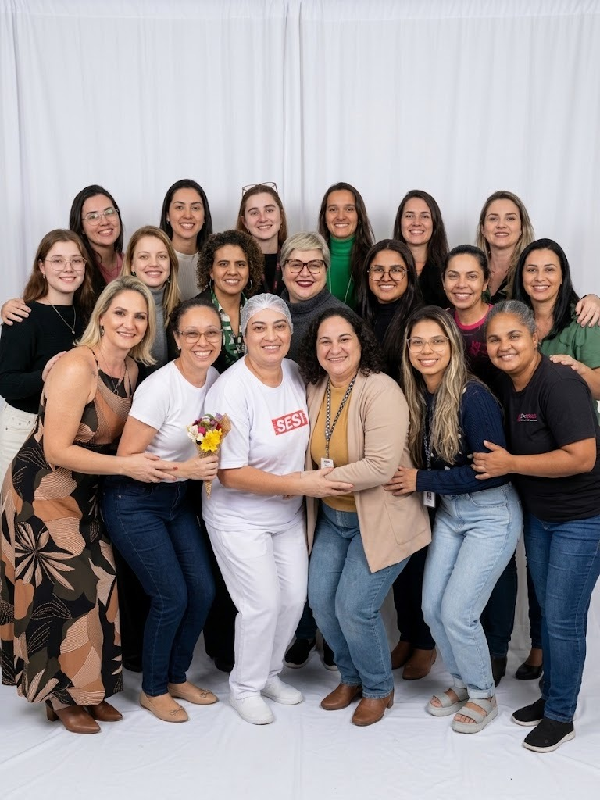
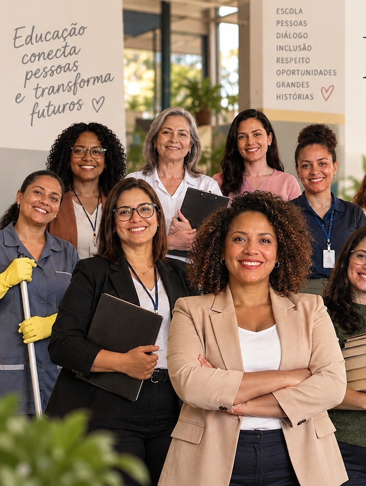

Conheça nossas homenageadas
O projeto “Mulheres — Histórias que Inspiram” tem como objetivo reconhecer e valorizar as mulheres que integram a comunidade escolar e que contribuem, diariamente, para o funcionamento e desenvolvimento da instituição. A proposta parte do reconhecimento de que uma escola é construída não apenas por sua estrutura física, mas principalmente pelas pessoas que nela atuam e colaboram. Nesse sentido, o projeto busca apresentar suas histórias, trajetórias, experiências, desafios e conquistas, evidenciando a importância de cada uma para a comunidade.

Conheça nosso projeto
O projeto reúne mulheres que desempenham diferentes funções dentro da instituição, contemplando áreas como Gestão, Secretaria, Atendimento, Administração, Limpeza, Alimentação, Biblioteca, Recepção, Segurança e Apoio Pedagógico, além de Mães e Responsáveis que acompanham a trajetória dos estudantes. Por meio de entrevistas e da organização das informações coletadas, buscamos apresentar não apenas suas funções profissionais, mas também aspectos de suas trajetórias, contribuições, desafios e conquistas. Dessa forma, o projeto proporciona uma visão mais ampla sobre a importância dessas mulheres para o ambiente escolar.
Novidades
Durante o projeto, conhecemos novas histórias e trajetórias das mulheres da comunidade escolar. As entrevistas permitiram compreender melhor suas experiências, desafios e conquistas. Cada história revela uma trajetória única e mostra como as mulheres são fundamentais no nosso dia a dia.
Saiba mais
As histórias apresentadas neste projeto revelam diferentes trajetórias e experiências que fazem parte da comunidade escolar. Cada mulher possui uma contribuição específica, seja no contato com os estudantes, no suporte às equipes, na organização dos setores ou no acompanhamento da vida escolar. Por meio das entrevistas, foi possível conhecer essas experiências, seus desafios e conquistas, ampliando o olhar sobre a importância de cada função para o funcionamento da instituição. Assim, o projeto busca dar visibilidade a essas trajetórias e promover o reconhecimento, o respeito e a valorização das mulheres que contribuem diariamente para a construção de um ambiente escolar acolhedor, organizado e significativo.
